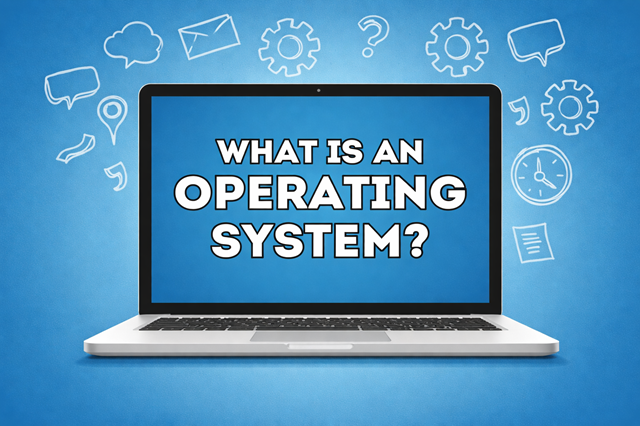

What is an Operating System?
An Operating System (OS) is system software that manages a computer's hardware and software resources and provides services for computer programs. It acts as a bridge between the user and the computer hardware.
Without an operating system, a computer cannot function properly. The OS controls how programs run and how hardware components like the CPU, memory, storage, and input/output devices work together.
Main Functions of an Operating System
1. Process Management
The OS manages running programs (called processes). It:
- Starts and stops programs
- Allocates CPU time
- Enables multitasking
2. Memory Management
The OS controls how memory (RAM) is used. It:
- Allocates memory to programs
- Frees memory when programs close
- Prevents programs from interfering with each other
3. File System Management
The OS organizes and manages files on storage devices. It:
- Creates, deletes, and modifies files
- Organizes files into folders (directories)
- Controls file permissions
4. Device Management
The OS communicates with hardware devices using drivers. Examples:
- Keyboard and mouse
- Printers
- Graphics cards
5. User Interface
The OS provides a way for users to interact with the computer:
- Graphical User Interface (GUI) — Windows, icons, menus
- Command Line Interface (CLI) — text-based commands
Why Operating Systems Are Important
Operating systems make computers usable. They:
- Allow users to run applications
- Manage hardware efficiently
- Provide security and user accounts
- Enable communication between software and hardware
Without an operating system, users would need to control hardware directly, which would be extremely complex.
Sources: Information on this page was adapted for learning purposes from GeeksforGeeks, Microsoft Learn, and Encyclopedia Britannica.